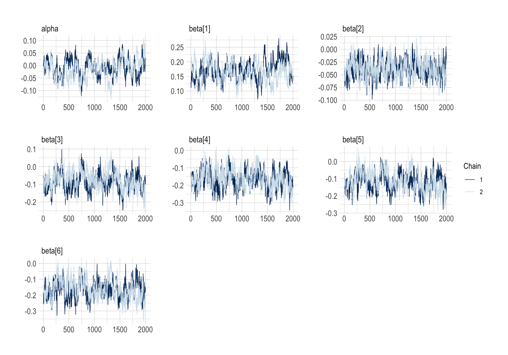
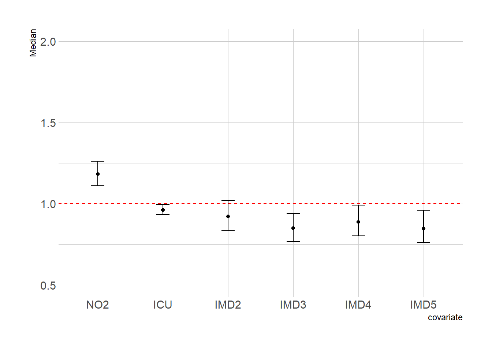

Exposure Response Modelling
SHARP Bayesian Modeling for Environmental Health Workshop
Goal of this computing lab session
This goal of this lab is to use NIMBLE to carry out an exposure-response regression in a variety of ways.
What’s going to happen in this lab session?
During this lab session, we will build:
- Linear exposure-response regression;
- Piecewise exposure-response regressions;
- Linear exposure-response regression; and
- Non-linear exposure-response regression.
Introduction
We will build on and extend the previous lab the COVID-19 deaths during March-July 2020, in England, at the LTLA geographical level (317 areas), as taken from the published paper:
Konstantinoudis G, Padellini T, Bennett JE, Davies B, Ezzati M, Blangiardo M. Long-term exposure to air-pollution and COVID-19 mortality in England: a hierarchical spatial analysis. medRxiv [Preprint]. 2020 Aug 11:2020.08.10.20171421. doi: 10.1101/2020.08.10.20171421. Update in: Environ Int. 2021 Jan;146:106316. PMID: 32817974; PMCID: PMC7430619.
For that analysis, we included 38,573 COVID-19 deaths up to June 30, 2020 at the Lower Layer Super Output Area level in England (\(n = 32844\) small areas). We retrieved averaged NO\(_2\) concentration during 2014-2018 from the Pollution Climate Mapping. We used Bayesian hierarchical models to quantify the effect of air pollution while adjusting for a series of confounding and spatial autocorrelation.
We will build simple Bayesian models to try to understand what is happening in the data. Once again we will use NIMBLE as the basis for our Bayesian model writing.
Load in data
Let’s load in the data
data_england <- read_sf(here("data", "England", "COVIDecoregression.shp"))
glimpse(data_england)Rows: 316
Columns: 7
$ LTLA <chr> "E06000001", "E06000002", "E06000003", "E06000004", "E0600000…
$ deaths <int> 110, 206, 134, 155, 90, 128, 230, 96, 145, 215, 318, 35, 101,…
$ expectd <dbl> 78.76883, 103.19093, 130.60260, 156.72359, 97.68445, 92.98230…
$ TtlICUB <dbl> 0.009952596, 0.039161834, 0.041194283, 0.009735667, 0.0128089…
$ NO2 <dbl> 12.880443, 16.396532, 11.762402, 13.686531, 11.638713, 17.135…
$ IMD <dbl> 1, 1, 1, 2, 2, 1, 3, 1, 1, 1, 4, 1, 2, 5, 1, 1, 5, 1, 3, 2, 1…
$ geometry <MULTIPOLYGON [m]> MULTIPOLYGON (((447213.9 53..., MULTIPOLYGON (((…summary(data_england) LTLA deaths expectd TtlICUB
Length:316 Min. : 4.0 Min. : 8.287 Min. :0.000e+00
Class :character 1st Qu.: 77.0 1st Qu.: 99.339 1st Qu.:8.548e-05
Mode :character Median : 117.5 Median :129.067 Median :8.092e-03
Mean : 155.6 Mean :155.630 Mean :1.399e-02
3rd Qu.: 191.2 3rd Qu.:177.896 3rd Qu.:1.460e-02
Max. :1226.0 Max. :903.219 Max. :1.911e-01
NO2 IMD geometry
Min. : 4.48 Min. :1.000 MULTIPOLYGON :316
1st Qu.:11.09 1st Qu.:2.000 epsg:27700 : 0
Median :13.96 Median :3.000 +proj=tmer...: 0
Mean :15.05 Mean :2.997
3rd Qu.:17.26 3rd Qu.:4.000
Max. :46.45 Max. :5.000 class(data_england)[1] "sf" "tbl_df" "tbl" "data.frame"data_england_simpler <- rgeos::gSimplify(as(data_england, "Spatial"), tol = 500)
data_england_simpler <- st_as_sf(data_england_simpler)
data_england_simpler <- cbind(data_england_simpler, data_england %>% mutate(geometry = NULL))
data_england <- data_england_simplerThe following code subsets the data to London so the models are quicker to run. We’re going to run the models for London, then load in the samples for England (and pretend we ran for England!).
data_england <- data_england[startsWith(data_england$LTLA, "E09"), ]
ggplot(data = data_england, fill = "NA") +
geom_sf() +
theme_void()How many spatial units are in the map?
# Obtain the number of LTLAs
n.LTLA <- nrow(data_england)
n.LTLA[1] 316Adjacency matrix in R
Convert the polygons to a list of neighbors using the function poly2nb()
LTLA_nb <- poly2nb(pl = data_england)
LTLA_nbNeighbour list object:
Number of regions: 316
Number of nonzero links: 1332
Percentage nonzero weights: 1.333921
Average number of links: 4.21519
3 regions with no links:
44 95 284Convert the list you defined previously to NIMBLE format (i.e. a list of 3 components adj, num and weights) using the function nb2WB() and print a summary of the object.
nbWB_A <- nb2WB(nb = LTLA_nb)
names(nbWB_A)[1] "adj" "weights" "num" 1. Linear exposure-response regression
Let \(\mathcal{D}\) be the observation window of England and \(A_1, A_2, \dots, A_N\) a partition denoting the LTLAs in England with \(\cup_{i=1}^NA_i = \mathcal{D}\) and \(A_i\cap A_j\) for every \(i\neq j\). Let \(O_1, O_2, \dots, O_N\) be the observed number of COVID-19 deaths occurred during March-July 2020 in England, \(E_1, E_2, \dots, E_N\) is the expected number of COVID-19 deaths and \(\lambda_1, \lambda_2, \dots, \lambda_N\) the standardized mortality ratio (recall \(\lambda_i = \frac{O_i}{E_i}\)). A standardized mortality ratio of \(1.5\) implies that the COVID-19 deaths we observed in the \(i\)-th area are \(1.5\) times higher to what we expected. Under the Poisson assumption we have:
\[ \begin{equation} \begin{aligned} \hbox{O}_i & \sim \hbox{Poisson}(E_i \lambda_i); \;\;\; i=1,...,N\\ \log \lambda_i & = \alpha + \beta_1 X_{1i} + \beta_2 X_{2i} + \theta_i + \phi_i\\ \theta_i &\sim \hbox{Normal}(0, \sigma^2_{\theta_i})\\ {\bf \phi} & \sim \hbox{ICAR}({\bf W}, \sigma_{\phi}^2) \,\, , \sum_i \phi_i = 0 \\ \alpha & \sim \text{Uniform}(-\infty, +\infty) \\ \beta_1, \beta_2 & \sim \mathcal{N}(0, 10) \\ 1/\sigma_{\theta}^2 & \sim \hbox{Gamma}(0.5, 0.05) \\ 1/\sigma_{\phi}^2 & \sim \hbox{Gamma}(0.5, 0.0005) \\ \end{aligned} \end{equation} \]
the terms \(\beta_1 X_{1i} + \beta_2 X_{2i} + \sum_{j=2}^5\beta_{3j} X_{3i}\), where \(X_{1i}, X_{2i}, X_{3i}\) are the ICU beds, NO\(_2\) and IMD in the \(i\)-th LTLA, \(\beta_1, \beta_2, \sum_{j=2}^5\beta_{3j}\) the corresponding effects and \(exp(\beta_1), exp(\beta_2)\) the relative risk of ICU beds or NO\(_2\) for every unit increase and of the ICU beds or NO\(_2\). For instance \(exp(\beta_2) = 1.8\) means that for every unit increase of long term exposure to \(NO_2\), the risk (read standardized mortality ratio) of COVID-19 deaths cancer increases by \(80\%\). \(exp(\beta_{32}), \beta_{33}, \beta_{34}, \beta_{35}\) are the relative risks compared to the baseline IMD category, ie the most deprived areas. An \(exp(\beta_{35}) = 0.5\) means that the risk of COVID-19 deaths in most affluent areas decreases by \(50%\) compared to the most deprived areas.\(\tau_{\theta}\) is a precision (reciprocal of the variance) term that controls the magnitude of \(\theta_{i}\). We will first write the model in NIMBLE.
BYMecoCode <- nimbleCode({
# priors
alpha ~ dflat() # vague prior (Unif(-inf, +inf))
overallRR <- exp(alpha) # overall RR across study region
tau.theta ~ dgamma(0.5, 0.05) # prior for the precision hyperparameter
sigma2.theta <- 1 / tau.theta # variance of unstructured area random effects
tau.phi ~ dgamma(0.5, 0.0005) # prior on precison of spatial area random effects
sigma2.phi <- 1 / tau.phi # conditional variance of spatial area random effects
for (j in 1:K) {
beta[j] ~ dnorm(0, tau = 1)
RR.beta[j] <- exp(beta[j])
}
RR.beta1_1NO2 <- exp(beta[1] / sd.no2) # get per 1 unit increase in the airpollution (scale back)
# likelihood
for (i in 1:N) {
O[i] ~ dpois(mu[i]) # Poisson likelihood for observed counts
log(mu[i]) <- log(E[i]) + alpha + theta[i] + phi[i] + inprod(beta[], X[i, ])
# the inprod is equivalent to beta[1]*X1[i] + beta[2]*X2[i] + beta[3]*X32[i] + beta[4]*X33[i] + beta[5]*X34[i] + beta[6]*X35[i]
SMR[i] <- alpha + theta[i] + phi[i] + inprod(beta[], X[i, ])
theta[i] ~ dnorm(0, tau = tau.theta) # area-specific RE
resRR[i] <- exp(theta[i] + phi[i]) # area-specific residual RR
proba.resRR[i] <- step(resRR[i] - 1) # Posterior probability
}
# BYM prior
phi[1:N] ~ dcar_normal(adj = adj[1:L], weights = weights[1:L], num = num[1:N], tau = tau.phi, zero_mean = 1)
})Create data object as required for NIMBLE.
n.LTLA <- dim(data_england)[1]
# create the dummy columns for deprivation
data_england <- data_england |>
mutate(IMD = as_factor(IMD)) |>
mutate(as.data.frame(model.matrix(~ 0 + IMD, data = pick(everything()))))
# matrix of covariates
Xmat <- cbind(
scale(data_england$NO2)[, 1],
scale(data_england$TtlICUB)[, 1],
data_england$IMD2,
data_england$IMD3,
data_england$IMD4,
data_england$IMD5
)
# Format the data for NIMBLE in a list
covid_data <- list(
O = data_england$deaths, # observed nb of deaths
# covariates
X = Xmat
)
# number of total covariates
K <- ncol(Xmat)
covid_constants <- list(
N = n.LTLA, # nb of LTLAs
K = K, # number of covariates
# adjacency matrix
L = length(nbWB_A$weights), # the number of neighboring areas
E = data_england$expectd, # expected number of deaths
adj = nbWB_A$adj, # the elements of the neighbouring matrix
num = nbWB_A$num,
weights = nbWB_A$weights
)Create the initial values for ALL the unknown parameters:
# initialise the unknown parameters, 2 chains
inits <- list(
list(
alpha = 0.01,
beta = rep(0, K),
tau.theta = 10,
tau.phi = 1,
theta = rep(0.01, times = n.LTLA),
phi = c(rep(0.5, times = n.LTLA))
),
list(
alpha = 0.5,
beta = rep(-1, K),
tau.theta = 1,
tau.phi = 0.1,
theta = rep(0.05, times = n.LTLA),
phi = c(rep(-0.05, times = n.LTLA))
)
)Which model parameters do you want to monitor? Set these before running NIMBLE. Call this object parameters_to_monitor.
parameters_to_monitor <- c("sigma2.theta", "sigma2.phi", "overallRR", "theta", "beta", "RR.beta", "resRR", "proba.resRR", "alpha", "RR.beta1_1NO2")Run the MCMC simulations using the function nimbleMCMC(). If everything is specified reasonably, this needs approximately 5 minutes.
tic <- Sys.time()
modelBYMeco.sim <- nimbleMCMC(
code = BYMecoCode,
data = covid_data,
constants = covid_constants,
inits = inits,
monitors = parameters_to_monitor,
niter = 50000,
nburnin = 30000,
thin = 10,
nchains = 2,
setSeed = 9,
progressBar = TRUE,
samplesAsCodaMCMC = TRUE,
summary = TRUE,
WAIC = TRUE
)
toc <- Sys.time()
toc - tic
# saveRDS(modelBYMeco.sim, file = "NIMBLE_BYM_A4")modelBYMeco.sim <- readRDS("NIMBLE_BYM_A4")Retrieve WAIC and compare with previous model. Which model performs best?
modelBYMeco.sim$WAICnimbleList object of type waicNimbleList
Field "WAIC":
[1] 2630.603
Field "lppd":
[1] -1158.595
Field "pWAIC":
[1] 156.7069Check the convergence of the intercept and covariates NO\(_2\) and ICU beds. What do you observe?
mcmc_trace(modelBYMeco.sim$samples, pars = c("alpha", paste0("beta[", 1:K, "]")))
Retrieve summary statistics for the two covariates and interpret (it is easier to interpret on the relative scale):
modelBYMeco.sim$summary$all.chains[paste0("RR.beta[", 1:K, "]"), ] Mean Median St.Dev. 95%CI_low 95%CI_upp
RR.beta[1] 1.2519365 1.2524190 0.04673867 1.1597589 1.3395889
RR.beta[2] 0.9645565 0.9640884 0.01590041 0.9337215 0.9961903
RR.beta[3] 0.9385009 0.9363240 0.05052736 0.8436705 1.0426100
RR.beta[4] 0.9018306 0.9015376 0.04897722 0.8085916 1.0006981
RR.beta[5] 0.9494108 0.9496892 0.05695198 0.8366907 1.0598967
RR.beta[6] 0.9140398 0.9142683 0.05849248 0.7988786 1.0307437We can get a nice credible intervals plot as well:
modelBYMeco.sim$summary$all.chains[paste0("RR.beta[", 1:K, "]"), ] |>
as_tibble() |>
select(Median, `95%CI_low`, `95%CI_upp`) |>
mutate(
covariate = factor(c("NO2", "ICU", paste0("IMD", 2:5)), levels = c("NO2", "ICU", paste0("IMD", 2:5)))
) -> cov.eff
cov.eff |> head()# A tibble: 6 × 4
Median `95%CI_low` `95%CI_upp` covariate
<dbl> <dbl> <dbl> <fct>
1 1.25 1.16 1.34 NO2
2 0.964 0.934 0.996 ICU
3 0.936 0.844 1.04 IMD2
4 0.902 0.809 1.00 IMD3
5 0.950 0.837 1.06 IMD4
6 0.914 0.799 1.03 IMD5 cov.eff |>
ggplot(aes(x = covariate, y = Median)) +
geom_point() +
geom_errorbar(aes(x = covariate, ymin = `95%CI_low`, ymax = `95%CI_upp`), width = 0.2) +
ylim(c(0.5, 1.5)) +
geom_hline(yintercept = 1, lty = 2, col = "red")
The effect by unit increase in the long term exposure to NO\(_2\) is RR.beta1_1NO2:
# as relative risk per 1 unit increase in the long term NO2 exposure
modelBYMeco.sim$summary$all.chains[paste0("RR.beta1_1NO2"), c("Median", "95%CI_low", "95%CI_upp")] Median 95%CI_low 95%CI_upp
1.038588 1.025246 1.050411 # as percentage increase in mortality for 1 unit increase in the long term NO2 exposure
(modelBYMeco.sim$summary$all.chains[paste0("RR.beta1_1NO2"), c("Median", "95%CI_low", "95%CI_upp")] - 1) * 100 Median 95%CI_low 95%CI_upp
3.858833 2.524564 5.041070 2. Piecewise exposure-response regressions
TO DO
3. Linear exposure-response regression
TO DO
4. Non-linear exposure-response regression.
TO DO
Further closing remarks for Advanced section
Here, we examined the effect of long term exposure to NO\(_2\) on COVID-19 mortality. We fitted several models, some with either linear or non-linear models. We fitted a BYM model to account for unknown spatial confounding but in addition we accounted for total number of ICU beds and deprivation per LTLA. We reported evidence of an increased COVID-19 mortality for increasing levels of NO\(_2\).